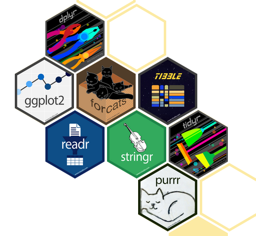
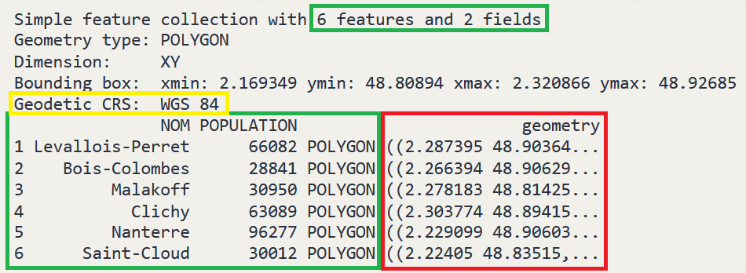
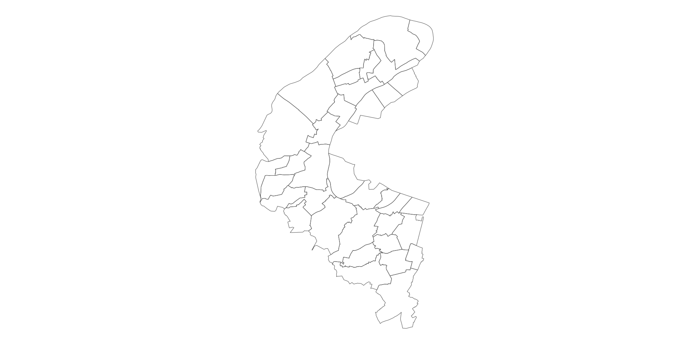
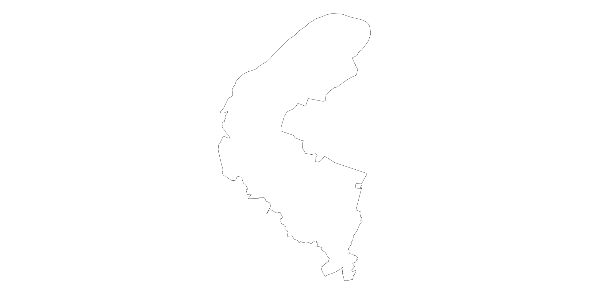

import {download_vectorfile} from "@linogaliana/cartiflette-js"
bertin = require("bertin@latest")
df = download_vectorfile({
"value": "92",
"crs": 4326,
"borders": "COMMUNE",
"vectorfile_format": "geojson",
"filter_by": "DEPARTEMENT",
"source": "EXPRESS-COG-CARTO-TERRITOIRE",
"year": 2022
})Introduction aux méthodes quantitatives avec
Chapitre 4: manipuler des données spatiales
Chapitre introductif
Note
- Exercices associés à ce chapitre ici
Introduction
dplyrfacilite l’analyse de données avec
- Mais les données géographiques sont plus complexes:
- Données classiques associées à des objets géométriques
- Besoin de faire des opérations géométriques (fusion, dissolution…)
- SIG offrent une approche cohérente pour ce type d’opération
- peut se comporter comme un SIG !
La réponse: le package sf !

sf, une association de tables de données classiques à des géométries
tidyverseLa réponse: le package sf !
- Extension de
dplyrpour les données spatiales- Verbes
dplyrfonctionnent de la même manière - Opérations géométriques grâce à
GDALen arrière plan
- Verbes
Un tibble amélioré:
{fig-align = “center”}
Anatomie d’un objet sf
Les attributs
- Valeurs associées à chaque niveau géographique
- Donnée tabulaire classique
dplyrfonctionne normalement
Anatomie d’un objet sf
Les géométries
- Valeurs numériques interprétées pour représenter la dimension géographique
- Plusieurs types d’objets: points, polygones, lignes…
- Opérations sur géométries grâce à
sf


Anatomie d’un objet sf
Le système de référence de l’objet
- Position sur terre \(\to\) position dans le plan
- Multitude de projections (cf. suite)
- Gestion cohérente grâce à
sf- Utilise les codes EPSG (4326, 2154…)
- Définition souvent automatique
- Reprojections facilitées avec
st_transform
Coordinate Reference System:
User input: WGS 84
wkt:
GEOGCRS["WGS 84",
DATUM["World Geodetic System 1984",
ELLIPSOID["WGS 84",6378137,298.257223563,
LENGTHUNIT["metre",1]]],
PRIMEM["Greenwich",0,
ANGLEUNIT["degree",0.0174532925199433]],
CS[ellipsoidal,2],
AXIS["geodetic latitude (Lat)",north,
ORDER[1],
ANGLEUNIT["degree",0.0174532925199433]],
AXIS["geodetic longitude (Lon)",east,
ORDER[2],
ANGLEUNIT["degree",0.0174532925199433]],
ID["EPSG",4326]]Les projections cartographiques
Principe
- Représentation dans un plan (2D) d’une surface arrondie en 3D
- Théorème remarquable de Gauss: la surface de la Terre ne peut être cartographiée sans distortion.
- Multitude de projections possibles
Exemple: projection de Mercator
Préserve les angles mais ne conserve pas les surfaces et leurs proportions relatives (cf. site thetruesize.com).
(Web) Mercator / WGS 84 (4326)
- Projection la plus usuelle:
- Système GPS (position précise depuis des satellites grâce conservation des angles)
- Fonds de carte web Google, OpenStreetMap…
- Mais déforme les distances et superficies
Astuce pour la France
- Longitude (\(x\)) tourne autour de 0° (de -5.2 à +9.6 pour être plus précis)
- La latitude (\(y\)) autour de 45 (entre +41.3 à +51.1)
Lambert 93 (2154)
- Projection officielle pour la métropole
- Projection conique
- D’autres Lambert pour les DROM
- Orthonormée, centrée sur la métropole
- On peut faire des calculs de distance sur des coordonnées
- Distance en mètres = distance euclidienne (\(\sqrt{(x_1-x_2)^2+(y_1-y_2)^2}\))
Astuce pour la France
- Coordonnées \(x\): entre 100 000 et 1 300 000
- La latitude (\(y\)): entre 6 000 000 et 7 200 000
La projection de Spilhaus
Le monde vu par les poissons 🐟🐡🐠
spilhaus = {
const width = 600;
const height = width;
const context = DOM.context2d(width, height);
const projection = d3.geoStereographic()
.rotate([95, 45])
.translate([width / 2, height / 2])
.scale(width / 10.1)
.center([30, -5])
.clipAngle(166);
const path = d3.geoPath(projection, context);
const land = topojson.feature(world, world.objects.land);
context.lineJoin = "round";
context.lineCap = "round";
context.fillStyle = "#f2f1ed";
context.fillRect(0, 0, width, height);
context.beginPath();
path({type: "Sphere"});
path(land);
context.lineWidth = 0.5;
context.stroke();
context.clip("evenodd");
context.save();
context.beginPath();
path(land);
context.filter = "blur(12px)";
context.fillStyle = "#006994";
context.fill("evenodd");
context.restore();
context.beginPath();
path(d3.geoGraticule10());
context.globalAlpha = 0.2;
context.strokeStyle = "#000";
context.stroke();
return context.canvas;
}//import {map as spilhausmap} with {height, width} from "@d3/spilhaus-shoreline-map"
import { world } from "@d3/spilhaus-shoreline-map"Introduction aux méthodes quantitatives avec , École Normale Supérieure (retour page principale)